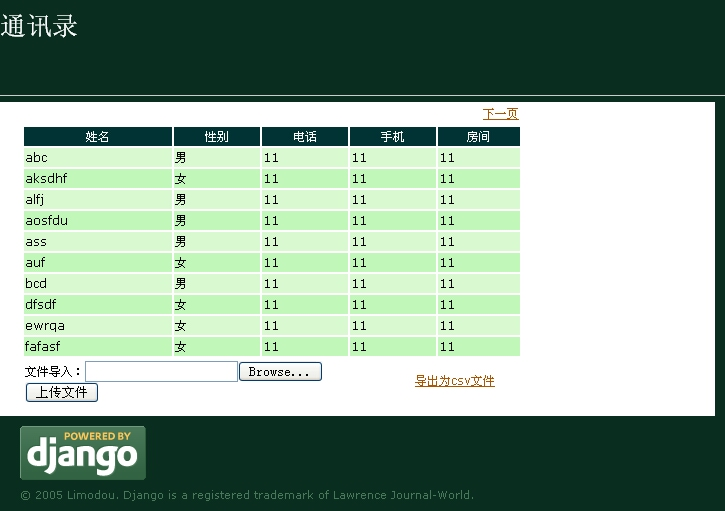

| 作者: | limodou |
|---|---|
| 联系: | limodou@gmail.com |
| 版本: | 0.1 |
| 主页: | http://wiki.woodpecker.org.cn/moin/NewEdit |
| BLOG: | http://www.donews.net/limodou |
| 版权: | FDL |
首先让我们说一说 media 链接吧。在上一讲中我使用了 site_media 作为静态文件的起始目录。但你知道吗，原来我想使用的是 media ，但为什么又改了呢？原因就是： admin 给占了。如果我使用 media ， Django 会指向 admin 的 media 目录，这可不是你想要的。因此这一点要特别提醒。
现在我们看一看所展示出来的页面，你满意吗？还有可以改进的地方。比如性别，它显示出来的直接是数据库的值，而不是对应的“男”，“女”，怎么办。还有表格显示也不是很好看。没说的，改！
最初我想使用 CustomManipulator (Manipulator 是 Django 中用来自动生成元素对应的 HTML 代码的对象，你可以定制它)，但使用 Manipulator 的话，你不能再使用 generic view 了，需要自已去实现 generic view 的某些代码，当然可以 copy and paste，但我目前不想那样做。于是我想到可以扩展 Django 的模板，自定义一个 filter 来实现它。(具体扩展的文档参见 The Django template language: For Python programmers ，你不仅可以扩展filter，还可以扩展 Tag ，还可以设置模板变量，还可以进行块处理等复杂的操作，自已去看吧。)
注意，这个目录要在某个应用的下面，同时它应与 models, views.py在同一层目录下。
文件名为你想要装入到模板中的名字。如文件起名为 change_gender.py ，那么你将可以在模板中使用:
{% load change_gender %}
来导入。
#coding=utf-8
from django import template
register = template.Library()
#@register.filter(name='change_gender')
def change_gender(value):
if value == 'M':
return '男'
else:
return '女'
register.filter('change_gender', change_gender)
先是导入 template 模块，然后生成一个 register 的对象，我将用来它注册我所定义的 filter 。我实现的 filter 将命名为 "change_gender" ，它没有参数(一个filter可以接受一个参数，或没有参数)。当 value 为 M 时返回 男 ，当 value 为 F 时返回 女 。然后调用 register 的 filter 来注册它。这里有两种写法，一种是使用 Python 2.4才支持的 decorator (此行注释掉了)，另一种是使用标准的写法。在使用 decorator 时，如果 filter 方法有多个参数的话，需要指明 name 参数，否则可以直接写为:
@register.filter
它自动将函数名认为是filter的名字。
Note
象 decorator(@register.filter) 这样的用法要在 Python 2.4 中才可以使用，因此如果你的代码也允许在 2.3 上运行的话，不要使用这样的用法。而改用传统的在函数定义之后重定义的方法。就象上面所做的一样。同时还要注意避免使用一些 2.4 的内置函数和语法，如 enumerate , generator 产生式之类的东西。因此上面我使用的是 2.3 的方式。
{% extends "base.html" %}
{% block content %}
{% load change_gender %}
<style type="text/css">
h1#title {color:white;}
.mytr1 {background:#D9F9D0}
.mytr2 {background:#C1F8BA}
.myth {background:#003333}
.th_text {color:#ffffff}
</style>
<div id="header">
<h1 id="title">通讯录</h1>
</div>
<hr>
<div id="content-main">
<table border="0" width="500">
<tr align="right">
<td>{% if has_previous %}
<a href="/address?page={{ previous }}">上一页</a>
{% endif %} {% if has_next %}
<a href="/address?page={{ next }}">下一页</a>
{% endif %}</td></tr>
</table>
<table border="0" width="500" cellspacing="2">
<tr class="myth">
<th><span class="th_text">姓名</span></th>
<th><span class="th_text">性别</span></th>
<th><span class="th_text">电话</span></th>
<th><span class="th_text">手机</span></th>
<th><span class="th_text">房间</span></th>
</tr>
{% for person in object_list %}
<tr class="{% cycle mytr1,mytr2 %}">
<td>{{ person.name }}</td>
<td>{{ person.gender|change_gender }}</td>
<td>{{ person.telphone }}</td>
<td>{{ person.mobile }}</td>
<td>{{ person.room }}</td>
</tr>
{% endfor %}
</table>
<table border="0" width="500">
<tr>
<td>
<form enctype="multipart/form-data" method="POST" action="/address/upload/">
文件导入：<input type="file" name="file"/><br/>
<input type="submit" value="上传文件"/>
</form>
</td>
<td><p><a href="/address/output/">导出为csv文件</a></p></td>
</tr>
</table>
</div>
{% endblock %}
改动了以下几个地方：
增加了 {% load change_gender %} 来导入自定义的 filter 。
增加了几个样式，象 mytr1, mytr2 等。
显示结果的 table 改为:
<table border="0" width="500" cellspacing="2">
表头改为:
<tr class="myth"> <th><span class="th_text">姓名</span></th> <th><span class="th_text">性别</span></th> <th><span class="th_text">电话</span></th> <th><span class="th_text">手机</span></th> <th><span class="th_text">房间</span></th> </tr>
增加了样式处理
数据显示的 tr 标签改为:
<tr class="{% cycle mytr1,mytr2 %}">
使用了 cycle Tag 来处理表格行的样式切换。注意： cycle 处理的是字符串。
修改 {{ person.gender }} 为 {{ person.gender|change_gender }}
Note
注意，一定要重启。象 templatetags 之类是在导入时处理的，因此如果 server 已经启动再添加的话是不起作用的。其它象增加 app, 修改 settings.py 都是要重启，而修改 urls.py , view, model代码，模板什么的可以不用重启，在必要时 Django 的测试 web server 会自动重启。如果你使用 Apache 的话，估计绝大多数情况下要重启，可能只有修改模板不用吧。不过也仍然可以设置 Apache 以便让每次请求过来时重新装入 Python 模块。
如果一切成功，你会看到 M, F 都改过来了。这里如果你感兴趣还可以改成小图标来表示，点缀一下。
效果画面为：
